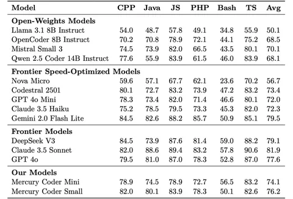
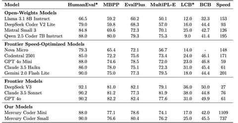
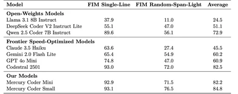

Сегодня разберём статью о диффузионной модели Mercury. На Copilot Arena она занимала второе место по качеству и первое — по скорости.
Диффузионные модели уже зарекомендовали себя в сфере генерации изображений. Авторы сегодняшней работы, в свою очередь, предлагают модель, ориентированную на решение задач программирования. Это объяснимо: диффузионные модели не очень хорошо подходят для генерации свободных коротких текстов, а код структурирован, в нём как правило много токенов.
Существует две версии Mercury Coder — Mini и Small. Подробности о них в публикации не раскрываются: мы не знаем их параметры и размеры. Заявлено, что Mini способна обрабатывать более 1100 токенов в секунду, а Small — 700. На претрейне использовали датасет объёмом в триллионы токенов, состоящий из интернет-данных, а также реальных и синтетических данных из проприетарных источников.
Что касается архитектуры, то, по сути — это трасформер, но с иным подходом к генерации. Модель стартует с зашумлённой версии ответа и на каждом шаге параллельно поправляет много позиций, постепенно «денойзя» последовательность. Длинны контекста модели — 32 тысячи токенов с расширением до 128 тысяч.
В большинстве бенчмарков Mercury Coder показывает себя лучше опенсорсных моделей, но уступает самым крупным и известным конкурентам вроде DeepSeek, GPT и Claude (таблица 1). То же самое касается и знания разных языков программирования — Mercury лучше опенсорсных решений, но хуже закрытых (таблица 2). При этом в плане скорости и при оценке fill-in-the-middle Mercury обходит даже именитых соперников (таблица 3).
Разбор подготовил
Душный NLP


